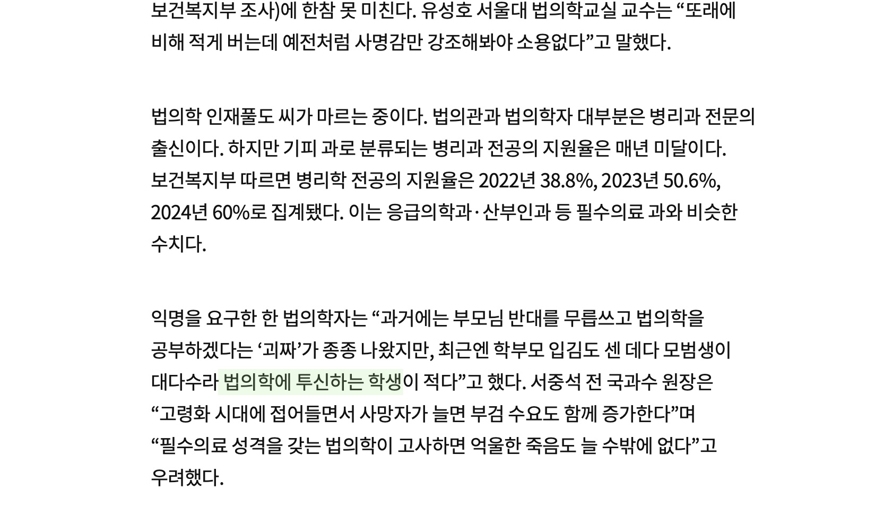

투신
投身, 던질 투에 몸 신.
1. 명사 어떤 직업이나 분야 따위에 몸을 던져 일을 함.
2. 명사 목숨을 끊기 위하여 몸을 던짐.
1.
형, 우리가 어쩌다가 이렇게 됐지?
음악 하나 해보겠다고 온갖 더러운 꼴 다 견뎌내면서 여기까지 버텨왔는데,
7인조에서 하나 둘씩 다 떨어져 나가고, 도대체 시골 바닥에서 이게 뭐하는 짓거리야, 이게.
성우야, 행복하니? 우리 중에 지 하고 싶은 일 하면서 사는 놈 너밖에 없잖아.
그렇게 좋아하는 음악 하면서 사니까 행복하냐고.*
성우는, 영화는 끝까지 대답이 없다.
 하고 싶은 일로 번듯하게 못 살 때. 알몸으로 벗겨진 채 홀로 기타를 칠 때. 빈 곳에서는 목소리가 더 크게, 더 오래 울린다.
하고 싶은 일로 번듯하게 못 살 때. 알몸으로 벗겨진 채 홀로 기타를 칠 때. 빈 곳에서는 목소리가 더 크게, 더 오래 울린다.
와이키키 브라더스를 만든 명필름에서 호기롭게 연 명필름아트센터는 이 영화를 마지막 상영으로, 10년 만에 운영을 마쳤다.
돌아오는 자유로에서, 옆자리 연기하는 친구는 말했다. 다들 가고 있는데 나만 그대로 멈춰 있는 것 같아. 나만 이렇게 철이 안 들면 어쩌지, 꿈 속에서 사는 것 같아.
뒷자리 정직원이 된 친구는 말했다. 그래도 하고 싶은 걸 하는 네가 멋있다고, 부럽다고.
2.
음악을 가르쳐 달라는 기태에게 성우는 답한다.
이건 날 샌 직업이야. 그러지 말고 다른 거 배워. 포크레인이나 자동차 정비나… 그런 거 좋잖아?*
로컬 소아과 병원에 실습을 간 적이 있다. 한 건물 통째로 소아과인 큰 규모이지만, 오전 중 배가 고파질 때 즈음 들어선 진료실에는 나와 의사 선생님 둘 뿐이다.
나는 책상 옆 멀찍이 동그란 의자에 앉았다. 눈을 어디에 둬야 할지 몰라 방 안의 소아 환자들을 위한 인형들을 보고 있다. 귀엽다. 선생님이 직접 모으신걸까. 선생님은 컴퓨터로 마켓 컬리를 살피고 있다.
정적이 충분히 흐른 후 그래도 학생에게 말을 걸어야겠지 싶은 의무감이 깃드신 건지, 말을 거신다. - 선생님 치즈 잘 알아요? - 앗 잘 모릅니다. - 크리스마스 준비해야 해서, 어디가서 이런 건 말하지 말아요.
치즈를 선택해 눌러 보며 제품 설명을 읽으신다. 한참 읽으시다가 나를 또 의식하신 건지 물으신다. - 선생님 소아과에 관심 없죠? 편하게 있다가 가요. - 아 저 관심 있습니다. 소아 환자 보는 것 좋아합니다. - 진짜요? 왜 다 망해가는 곳에 관심 가져요? 쌤 집에 의사 많아요? - 아니요 없습니다. - 쌤 공부 잘해요? - 그래도 괜찮은 편입니다. - 그럼 너무 아까워. 이런 거 말고, 안과 같은 거, 좋잖아요.
나는 기분이 조금 상했다. 망해가면, 망하지 않게, 관심이 있다고 하면 오라고 해야지, 왜 이렇게까지 오지 말라고 하시는거지? 본인도, 수많은 소아과 의사들이 미용으로 빠진다는 와중에도, 계속 소아과 하고 계시면서?
한 소아과 의사의 이야기를 건너들은 적 있다. 그 지역에서 가장 환자가 많은 소아과의 원장으로 자부심이 있으셨다고 한다. 그러다 소아과의 한 교수의 장례식장에서 다른 소아과 의사들을 오랜만에 만났는데, 소아과를 하고 있다고 하니 다들 이상한 눈으로 쳐다 보면서 물었다고 한다. 왜 미용 안 하세요? 그리고 그는 미용을 하고 있다.
나는 욱한 마음에 물었다. 그럼 선생님은 다시 돌아과서 과 선택하라고 하면 다른 과 선택하실거에요?
선생님은 놀란듯 잠시 눈이 커졌다가 고민하는 듯하시더니 곧장 답하셨다. - 아니요.. 그래도 나는 소아과 할 거에요. 소아과의 유일한 장점이 뭔지 알아요? - 환자가 귀엽다? - 맞아요. 아기들은 예뻐. 똥을 싸도 예쁘고 토를 해도 예뻐.
답을 듣고 순간 놀랐다. 나는 물을 때 무슨 답을 예상했던걸까, 혹은 원했던걸까.
3.
제왕절개 수술 어시스트를 섰을 때 옆의 산부인과 교수는 속삭였다.
네가 이걸 하면 수련을 마칠 때 즈음이면 너의 몸값은 하늘을 치솟고 있을거야. 아무도 안 한다고 하잖아 지금.
누군가는 말했다.
밴드 붐은 온다고.
한 선배는 말했다.
지금이 저점매수라고 생각하고 가는 새끼는 병신이야. 그럼에도 가는거지.
주식 투자에는 이런 말이 있다.
떨어지는 칼날은 잡는 게 아니다.
한 교수는 말했다.
옛날에는 나 잘난 맛에 돈 잘 버는 일 하고 싶다는 건 왠지 다 속물 같다고 생각했어.
근데 지금 와서 보니까, 살면서 돈보다 중요한 것도 별로 없더라.

아무도 모른다. 여기가 지하라고 생각할 때, 지하 2층이 있을 수 있다. 어쩌면 지금이 가장 나은 모습일지도 모른다.
4.
절벽 위를 걸을 때, 구름 속 한치 앞도 보이지 않는 길에 발을 내딛어야 한다는 것을 넘어,
내가 이 절벽에서 떨어지려고 한다면 아무도 나를 막지 못한다는 것. 그것이 실존적 불안이다.
제아무리 많은 말을 함께 나누더라도 나만이 나를 던질 수 있음을 쥐고 있는 자라는 것.
나는 나를 그곳에 던질 용기가 있나?
나는 나를 던질만큼 그것을 원하나?
5.
부검실로 들어오는 죽은 자들. 세상에는 다양한 죽음이 있다.
누군가는 살기 위해 일하다가 죽었고 누군가는 여행하다가 죽었고 누군가는 아무도 모르는 사이 아무도 모르는 이유로 죽었다.
누군가는 스스로를 던져 죽었다.
투신(投身)은 자연적으로 높은 지형 또는 인공 건축물의 높은 곳에서 뛰어내려 투신자의 질량과 지구중력에 의한 운동에너지로 투신자의 육체를 파괴하여 죽음에 이르게 하는 자살 방식 가운데 하나이다. 투신은 다른 자살방법과 달리 자살에 이용하는 특별한 도구가 필요없으며 높은 곳에 가서 몸을 내던지는 것만으로 실행가능하기 때문에 매우 빈번하게 실행되는 자살 방법 중 하나인 반면, 높은 곳에서 느끼는 본능적인 공포감을 극복해야하기 때문에 상당한 용기가 필요하며, 그 때문에 순간적, 우발적인 충동에 의해 실행되는 편이다. 예외적으로 9·11테러의 경우, 비행기 충돌로 대피가 불가능해진 충돌면 이상 고층의 사람들은 연기와 고열로 인한 질식과 고통 때문에 자발적으로, 또는 판단능력이 흐려지거나, 버틸 힘이 없어 불가항력적으로 떨어진 경우가 많아 이를 투신으로 보아야 할지, 추락사로 보아야 하는지에 대한 논란이 있었다. 투신한 장소나 높이에 따라 다르지만 투신자는 극히 예외적인 경우를 제외하고 투신행위로 인하여 사망 또는 살아남더라도 영구적 장애를 남기는 중상을 입게 될 확률이 높다.*
6.
그녀는 돌이킬 수 없는 어떤 일을 저지르고 싶었다. 지나간 칠 년을 단번에 지워버리고 싶었다. 그것은 현기증이었다. 머리를 어지럽히는 극복할 수 없는 추락욕구.*
나는 하고 싶은 일은 할 수 있었다. 그럴수록 나는 땅과 어색해지는 것 같고 땅내음이 끌린다. 추락욕이라는 말을 만지작 거린다.
끌리는 것과 내가 정말 하고 싶은 것은 어떻게 구분하지? 소멸이 빛난다면. 그것에 눈이 먼다면.
기태는 음악을 한다.